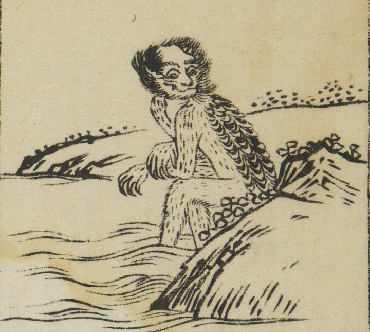

体長は3・4歳の小児ほどで、甲に鱗がある。頭頂部に毛はなく、顔面は虎に似て、鋭い爪をもつ。
著作者：平住専庵・橘有税画／出典：親書誌：U426_nichibunken_0476：唐土訓蒙圖彙；モロコシキンモウズイ／日付：2025／資源識別子：U426_nichibunken_0476_0024_0000
Copyright (c)2010- International Research Center for Japanese Studies, Kyoto, Japan. All rights reserved.